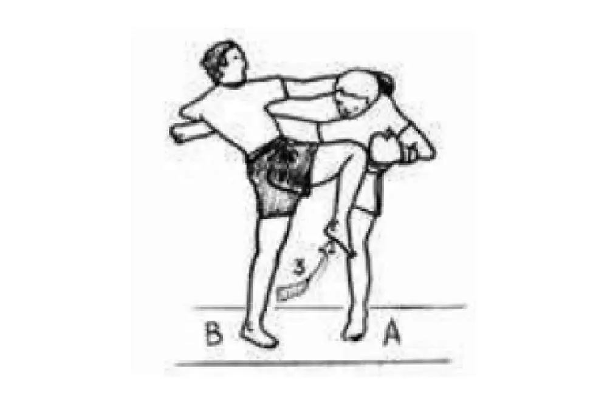
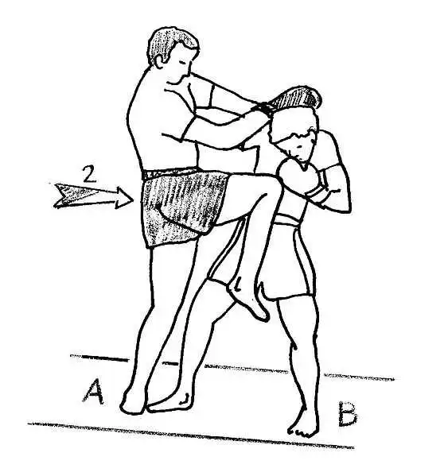
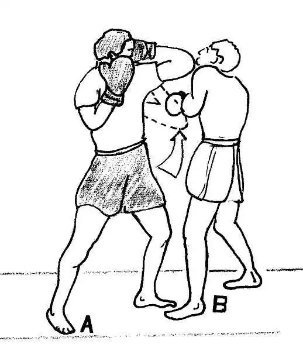
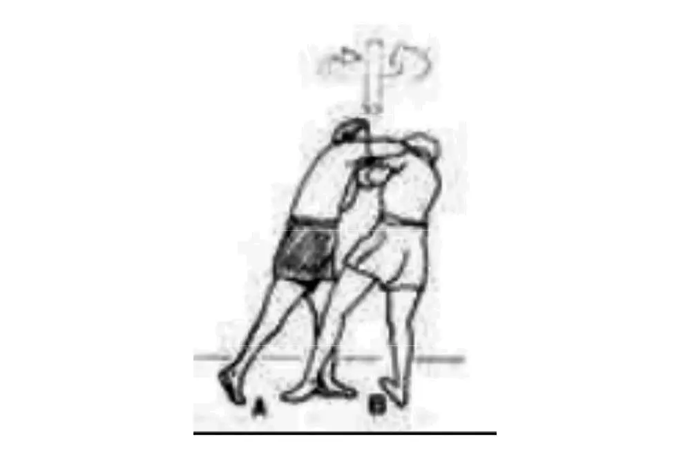
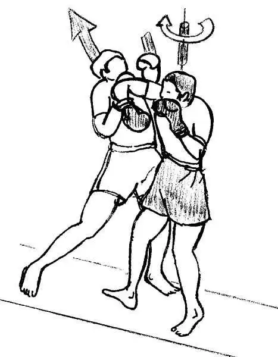
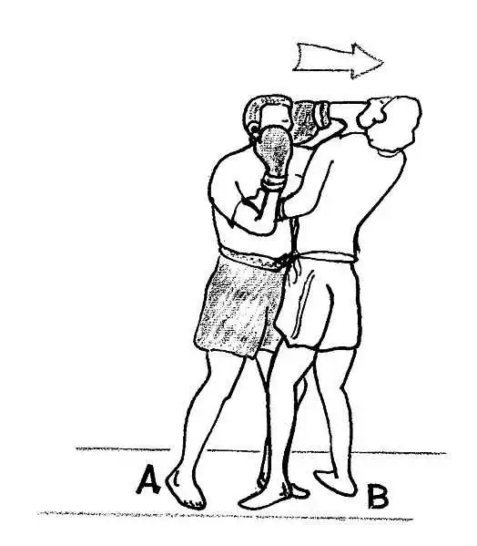
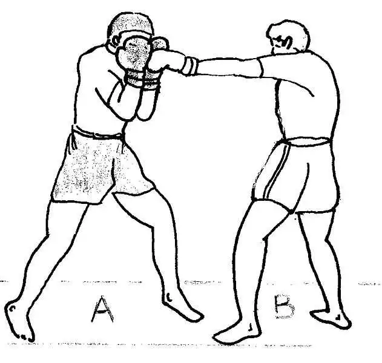

| Coup de poings direct (coup de poing très puissant donné dans l'axe direct.) |  |
| Uppercut (coup de poing remontant qui réalisé de bas en haut.) |  |
| Crochet (coup indirect qui est censé atterir sur le coté de l'adversaire. ) |  |
| Jab (assez similaire que le direct sauf execution plus rapide et puissance relativement faible.) | |
| Low kick (Coup de pied bas dans les jambes) |  |
| High kick (coup de pied circulaire niveau haut du pied) |  |
| Middle kick (coup de pied median) |  |
| Front kick (coup de pied frontal) |  |
| Coup de genou circulaire |  |
| coup de genou direct |  |
| coup de genou sauté |  |
| coup de coude retournés |  |
| coup de coude verticale remontant (de bas en haut) |  |
| coup de coude circulaire |  |
| coup vertical avec le revers du coude |  |
| coup de coude direct horizontal |  |
| chassée avec la paume du gant |

|
| blocage avec les avant-bras |

|
| blocage avec les gants |  |
| blocage avec le bras |

|